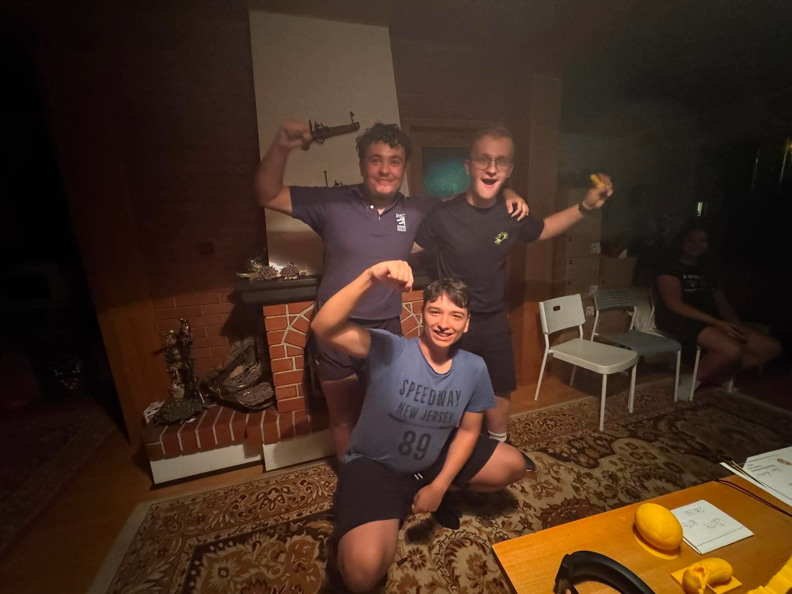

Co wiemy po rundzie jesiennej na ul.Stromej?

Podsumowanie rundy jesiennej na ulicy Stromej i przewidywania na wiosnę razem z Psiepauchem Krewedkowskim
Zdaje się że I część sezonu 2026/2027 - tj. runda jesienna dobiegła końca! Zapraszamy na podsumowanie po 6 pierwszych meczach sezonu oraz na przewidywania na rundę wiosenną!
W trakcie rundy jesiennej rozegranych zostało 6 meczów, a klasyfikacja strzelców wygląda następująco: 1) Vienna - 25 goli 2) Kreweda - 16 goli 3) Pero- 6 goli 4) Luśken - 4 gole 5) Ola - 1 gol
Wyglada na to że walka o złotego buta znów będzie się rozstrzygać między Krewedą a Vienną, obaj w bardzo dobrej predyspozycji, jednak Vienna wykazał się lepszym instynktem strzeleckim w rundzie jesiennej. Klasyfikacja kanadyjska pokazuje także ze to Vienna ma najwięcej G/A (33), Dalej Kreweda (25), Luśken (13), Ola (12) i Pero (9)
Wszystkie mecze były rozegrane co prawda towarzysko mieszanymi składami, dlatego ciężko mówić o formie ligowej. Jugosławianka grała w podstawowym składzie przeciw Luśken i Oli wygrywając aż 8 do 3, tym samym pokazując że chcą obronić tytuł w lidze.W tym sezonie rozegraliśmy już 6 spotkań w samej rundzie jesiennej, co zaczyna zrównywać się z liczbą meczy towarzyskich w CAŁYM poprzednim sezonie (8) co pokazuje że są szansę na zwiększenie liczby spotkań w przyszłym sezonie!
31 sierpnia padło słynne Here We Go! Zdobywca Złotego Koteua - Kreweda po zaledwie sezonie w Stromiance (2 mecze, 3g, 1a) przeniósł się za kwotę 110 mln euro do mistrza Stromej Jugosławianki, gdzie zbuduje drużynę razem z Vienną, najlepszym strzelcem oraz Zdobywcom Złotego Koteua 2025. Łączna wartość drużyny w tym sezonie wynosi 265 mln euro. Stromianka w wyniku transferu musiała poszukać wzmocnienia, zwłaszcza jeśli chodzi o grę defensywną. Zdecydowała się na zakup Luśken z Jugosławianki za kwotę 35 mln euro, Luśken miała jeden z największych procent obronionych strzałów w zeszłym sezonie. Łączna wartość drużyny to 137 mln euro. W klubie FS Lammers bez zmian, chodź klub walczy o zdobycie w zimowym okienku wychowanka akademii Stromianki - Kepapa.
A co przyniesie runda wiosenna? Na pewno będzie grad bramek oraz walka o króla strzelców między Vienną a Krewedą, którzy jednak będą musieli uważać na wchodzącego w szczytową formę Pera. Zdaje się że Luśken po kontuzji wraca do formy, ponieważ zaczyna już bić swoje rekordy strzeleckie z poprzednich sezonów i coraz pewniej czuje się w środku pola, aniżeli między słupkami. Forma Serduszkowatej pozostawia po rundzie jesiennej wiele do życzenia, ponieważ jest bardzo niestabilna, być może częstsze spotkania poprawią formę. Wśród kursów bukhmaherów pewniakiem do zdobycia Ligi Stromej jest Jugosławianka, jednak Stromianka już nie raz pokazała pazura. FS Lammers cały czas ubiega się o zawodnika z akademi Stromianki, który byłby dla nich poważnym wzmocnieniem. W Pucharze Stromej w Dywizji A debiutować będzie Kreweda, który będzie chciał pokazać że nie przyszedł tutaj jako chłopiec do bicia, zaś po raz pierwszy do dywizji B spadł Koteu! O Awans z dywizji juniorów do dywizji B będzie walczył perspektywiczny Kepap! W superpucharze stromej i grahamki będziemy ostrożni z przewidywaniami, ponieważ często jesteśmy świadkami wielkich zaskoczeń. O mówieniu nt nagród za sezon jeszcze za wcześnie, ale pojawiają się już pierwsze pogłoski wśród piłkarzy. Koniec roku oznacza także wybory do ZPNUS, czy zmieni się zarząd, czy dawny beton pozostanie? Oczywiście zgłaszanie kandydatów trwa do końca października.
Aktualnie Vienna jest w świetnej formie, biegnie jak po swoje w wyścigu o Króla Strzelców i Złotego Fryderyka (nowa alternatywa dla Złotego Koteua). Błyszczy grą zarówno w ofensywie jak i w defensywie. Nie wyklucza że to jego ostatni sezon, jednak aktualnie nie myśli o piłkarskiej emeryturze jako konieczności w niedalekiej przyszłości Kreweda w swoim ostatnim sezonie przed kontuzją błyszczał formą, zdobywając grad bramek i grając świetnie jako boczny obrońca. Podczas treningu nabawił się jednak kontuzji mięśni piszczelowej, po odpoczynku wrócił do treningów, zagrał dwa mecze jednak kontuzja się wznowiła, i trwa nadal. Zawodnik mówi że jeśli sytuacja nie zostanie opanowana do końca roku, zakończy karierę już w grudniu. Pero, po całkiem dobrym sezonie, uważa że stać go na więcej, zamierza wrócić do walki o chwałę na salonach. W zeszłym sezonie główną przeszkodą była niemożność strzelecka (miał najwięcej zmarnowanych 100% szans), jednak uważa że przyszło przełamanie. Jeśli utrzyma formę z rundy jesiennej, będzie poważnym kandydatem o Złotego Fryderyka Luśken - po fatalnej kontuzji w zeszłym roku, wydawało się że piłkarska kariera zmierza w dół po równi pochyłej, jednak dzięki nowemu planowi treningowemu i jakiemuś większemu zaangażowaniu zaczyna grać dobrą piłkę. Jeśli jej forma dalej będzie się rozwijała może poważnie namieszać w rundzie wiosennej. Ola- Wydaje się że siła na przyszłość stromej, jednak jej niestabilna forma utrudnia przedostaniu się do czołówki. Końcówkę poprzedniego sezonu zagrała w całkiem ok formie, to jednak runda jesienna to była masa błędów i porażek. Jeśli nie zmieni nastawienia, niestety ale nie osiągnie szczytów Kadra - Selekcjoner ogłosił powołania. Znaleźli się tam prawie wszyscy , aby wspomóc drużynę w zmaganiach na arenie. W kadrze znalazł się także Kreweda, który zagra swój ostatni mecz w Reprezentacji. Drużyna młodzieżowa - wykazuje wielki potencjał i przyszłość. Jeszcze za wcześnie na wielkie wnioski, ale wydaje się że są wielką nadzieją na piłkę na stromej.
Runda Jesienna dobiegła końca, teraz czas na zasłużony odpoczynek. A co przyniesie wiosna? Się okaże....